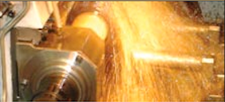

About PPC Lubricants
A Heritage of Specializing in Lubricants
For over 40 years, PPC Lubricants has earned a solid reputation for offering high quality products and services that improve your business. How? By providing customer retention programs/products for installers and products and services that increase equipment life and enchance the efficiency of all equipment whether it be Automotive, Heavy Duty Commercial, or Industrial in its applications.
At PCC Lubricants, we take tremendous pride in providing the highest level of Service. When you call our toll fee numbers you will be greeted by a staff that is knowledgeable and experienced in the various lubricants that we carry. Each customer service representative receives industry specific training on the lastest advancements in lubrication technology including changing equipment and OEM requirements.
PPC now has Bulk Delivery/Squirt Fill capabilities as DEF
Automotive
The Automotive Market requires a different set of tools in order to succeed. PPC Lubricants offers various programs that are customized to each customer...
Read More...Commercial
PPC Lubricants has been in business of supporting the Commercial market for over 40 years! The most important thing that we have learned is that...
Read More...Industrial
Regardless of the industrial market segment that you operate in: Metal, Forestry, Gas or Power Production, Foods, Plastics or almost any other field, your lubricant...
Read More...Diesel
As govermental regulations on emissions from diesel engines become more severe, it has forced vehicle manufactures to evaluate and adopt new technologies in order to...
Read More...